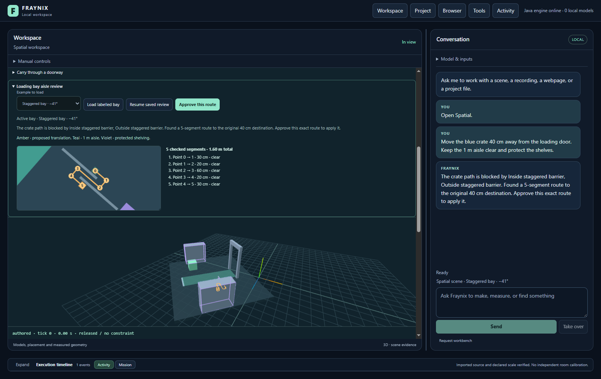
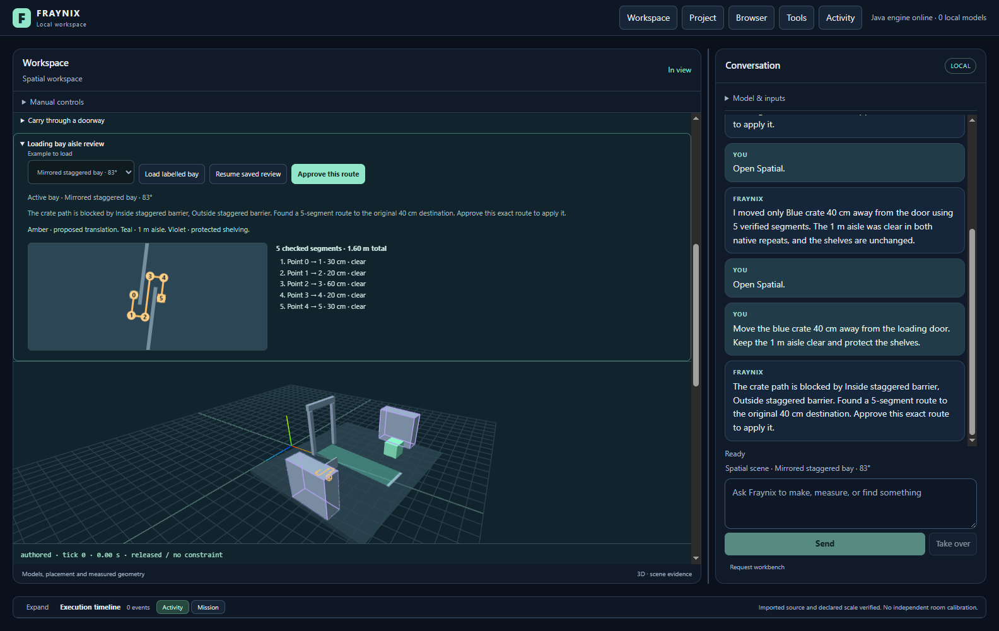
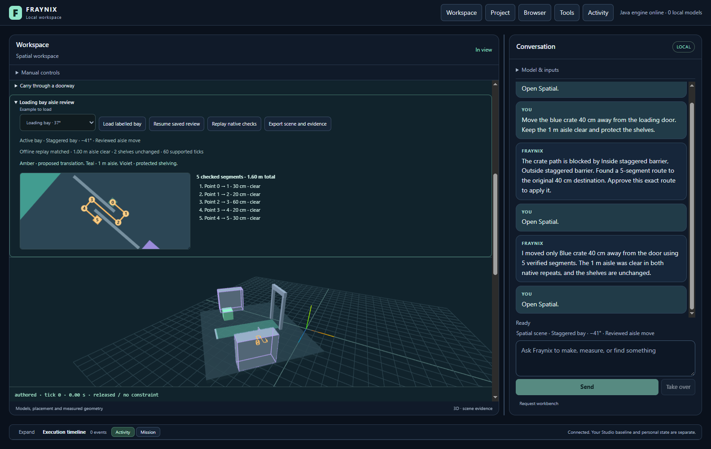

Verify multi-segment crate routes
Open Spatial, load the staggered bay and ask to move the blue crate. Review each numbered leg, then approve the route.

Five numbered segments around staggered barriers, awaiting exact route approval

The 83° bay produces the mirror of the first route

Offline replay reproduces all five segment checks and the supported destination
System files
Open source